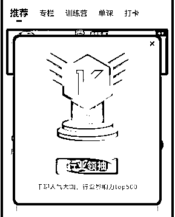
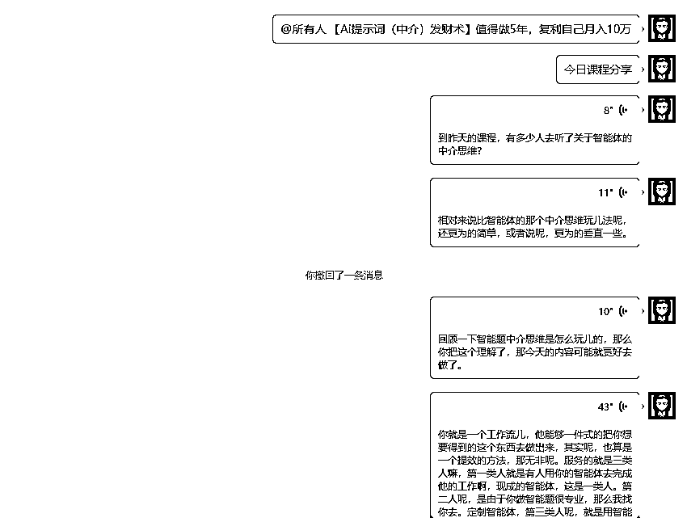

来源：https://x87o4rv4xr.feishu.cn/docx/NlLydJhSaoTFRAx4yQtcaSH6nSf
哈喽！我是领飞！！！
我的赚钱方法就是整合，用到极致的整合。
我平时更喜欢讲课，如果说整合赚钱是我一项能力，那么卖课程也是我钞能力吧！
卖课我做到【千聊影响力TOP.500】，领域关键词排名连续7年第一。

（这个不重要，顺便也发个求职：有哪些大佬害怕讲课，缺线上讲师；我很愿意为你服务。）
OK！
写作太消耗精力了，我宁愿讲一课，也不愿意坐下来写一篇文章。
很多时候我讲课，从来不会提前准备大纲，当课程讲完了大纲也就形成了。
当然，不得已时候，提前才准备大标题下几个小标题。
我测试过一项能力，给我一个PPT我就能讲出一堂课；前些年，也拿这项能力去给一些团队做讲课，赚一些外快。
现在Ai的赋能，让我对【随意话题讲课的能力】，有了更好后期多样性运用。
【108个中介思维发财术】就拿这个为例子吧。
一、正常的方法是：
把一个选题坐在电脑前，一边琢磨，一边思考，一边敲字，一边排版
这一套下来，精疲力竭，太烧脑了，怎么也要2-3个小时吧。
更别说课程了。
这篇文章其实写出来，不一定比Ai好，Ai能给你重新架构选题，但是你有此文章基础，Ai生成的文章你会更满意，甚至比你写的好，增加的内容更丰富。
这就不多少了，重点是下面。
二、Ai的方法是：
把一个选题直接对着微信（文章传输助手讲），一段，一段的讲，其实和你写文章差不多，只不过写文章更消耗精力。
当然你要具备知识的储备，不然真没法做下去。
这是一段段语音讲完，也可以是一篇文章。
把一段段语音合成就是一个课程，把语音转文字合成一起，就是一篇文章。
重点是：
这里有个BUG，一段段合成的文字，并不能直接使用，需要进行梳理。
梳理就有意思了：看你怎么梳理
一种方式：不改变内容每段话，只做去口语化梳理。
一种方式：不改变内容整体，还按照你的原内容梳理清晰。
一种方式：原内容可改变，更条例的归原内容。

我怎么做呢？
先把一段段的语音合成到一起，之后用【腾讯元宝】给出提示词：“把上面内容整理公众号文章，要求不遗漏任何一个知识点，可适当的插入案例，文字3000字”。
有意思的是【腾讯元宝】有2个智能体：hunyuan 和deepseek
会给出2个不同的整理。
你还别说，这2个整理还都不曲解你的意思，合成一下更好。
需求就是机遇：
1、把一段段的微信语音，合成一个完整的音频，不用手动，这是需求。
有没有智能体工作流能完成。
2、把一段段语音转化文字，整理到一个文档，不用手动，这是需求。
有没有智能体工作流能完成。
3、合成的文档，自动AI整理文章。
4、合成的语音，自动优化完成音频。
5、优化的文章与音频，合成课程。
我觉得，凡是带团队的老大，都需要这样的功能，把碎片的课程用AI智能体进行整理，二次的利用。
做智能体的兄弟，我觉得这个产品可以研发下。
OK！
最后，大家感触下我的工作提升效率的方式：
也同时分享，3个【中介思维发财术】
注意：音频是我之前原创的内容，一段段讲的内容，最后用AI整理了我文案内容。如果文案看不懂，可以尝试听下音频，效果加倍。
【开篇】一个颠覆认知的行业真相
上周，我亲眼见证了一位学员用AI智能体实现了"睡后收入"。这位原本月入不过万的宝妈，通过搭建智能体导航网站，现在每月稳定收入5万+。更惊人的是，她的网站流量80%来自搜索引擎，几乎不需要主动推广。
这个案例彻底颠覆了我对AI商业化的认知。
今天，我要把这个经过验证的"AI智能体中介思维"完整拆解给你，无论你是技术小白还是创业老手，都能从中找到适合自己的变现路径。
（上面这话不是我说的，是用我的音频文案【腾讯元宝】自动AI出来的）
核心价值：
市场需求数据：
场景一：创业者效率工具
场景二：企业定制服务
真实案例：
某跨境电商团队使用AI智能体后：
简单来说，就是搭建一个平台（网站/账号），把各种优质的AI智能体收集起来，提供给有需要的人，并从中赚取差价或服务费。
核心优势：
玩法一：智能体导航网站（推荐新手）
操作步骤：
变现方式：
案例：
@AI工具库 网站运营数据：
玩法二：智能体测评IP（适合内容创作者）
爆款内容公式：
痛点引入 + 功能演示 + 效果对比 + 转化引导
运营技巧：
案例：
@AI小助手 账号成长轨迹：
玩法三：智能体定制联盟（资源整合者）
合作模式：
案例：
深圳某团队运营数据：
免费渠道：
付费渠道：
高效搜索技巧：
推荐工具：
SEO优化要点：
视频拍摄：
图文创作：
公域引流：
私域转化：
网站变现：
初级阶段：
中级阶段：
高级阶段：
常见风险：
应对策略：
案例1：小白逆袭
案例2：内容创业者
案例3：技术团队
记住这个财富公式：
AI智能体红利 = 流量入口 × 智能体库 × 信任背书
立即行动清单：
我为什么劝你别死磕AI技术？这才是普通人用AI赚钱的“捷径”
前几天有个粉丝私信我：“老师，我跟着教程学了半个月写提示词，结果用AI生成的文案还是干巴巴的，根本没人看。我是不是不适合做AI？”
我回他：“你是不是总觉得，用AI得先把自己变成‘技术大神’？错了。现在AI圈最赚钱的，从来不是会写代码、懂算法的人，而是能把别人的技术‘翻译’成普通人能用的人。”
今天这篇文章，我就撕开AI赚钱的“遮羞布”——真正能让普通人快速变现的，不是当“技术苦力”，而是当“AI中介”。
尤其是最近我反复研究的AI提示词中介玩法，简直是“站在巨人肩膀上捡钱”的典型。
（上面什么学员呀，都是AI通过我语音内容它自己填上去的，呵呵，太人性化了，当招募文案确实不错）
上节课咱们聊过“AI智能体中介”的三种赚钱逻辑，不知道大家还记得不？简单说就是：
这三种模式的底层逻辑其实很清晰：你不是技术的生产者，而是“需求”和“技术”的连接器。
那今天要聊的“AI提示词中介”，本质上和智能体中介是一回事——提示词，就是AI的“说明书”。
你想让AI给你写文章、做PPT、甚至设计海报，都得靠提示词“指挥”它。但问题在于：
所以，提示词的中介生意，本质是帮用户解决“不会用AI”的痛点——你不需要会写代码，不需要懂算法，只需要把全网优质的提示词整合起来，分类标注，再精准推送给需要的人，就能赚钱。
某博主，原本是做职场干货的，粉丝10万但变现困难。后来她发现：很多粉丝留言问“怎么用AI写周报”“怎么用AI做会议纪要”，但自己写教程太耗时间，而且效果参差不齐。
于是她做了件事：花了一个月时间，全网搜索“职场类AI提示词”——从“如何用AI生成让领导眼前一亮的周报”到“如何用AI整理会议录音并生成待办清单”，她甚至翻遍了知乎、小红书、B站的评论区，找那些被反复点赞的“隐藏提示词”。
然后她把这些提示词分类整理成一个“职场AI提示词库”，做成付费专栏，定价99元。结果上线第一周就卖了200多份，还有人找她定制“销售话术提示词”“面试应答提示词”——现在她的账号粉丝涨到30万，月收入稳定5万+。
这就是提示词的价值：它不是“花瓶”，而是AI落地的“最后一公里”。就像你买了辆豪车，但如果没有说明书，你连怎么启动都不知道；AI再强大，没有好的提示词，你也只能让它生成“今天天气真好”这种废话。
更关键的是，提示词的需求极其垂直——美业需要“产品推广提示词”，教育需要“课程设计提示词”，电商需要“商品详情页提示词”……每个行业都能撕开一个缺口。
我之前反复强调过：普通人做AI，千万别盯着“技术”死磕。
你让程序员去写代码，那是他的饭碗；但让普通人去整合别人的技术，反而能赚得盆满钵满。
那具体怎么整合？分三步走：
1、全网“扫货”：找到优质提示词的“矿脉”
首先，你要像“人形爬虫”一样，在全网搜索优质提示词。具体渠道包括：
刚开始做提示词整合时，每天花2小时刷抖音，用“AI提示词”“GPT提示词”等关键词搜内容，把点赞过1000的视频里的提示词都复制下来，整理成表格。
一个月后，他手里已经攒了5000+条提示词，覆盖“职场、教育、电商、美业”四大领域等。
2、分类标注：给提示词“贴标签”，让用户秒懂
光收集提示词没用，你得让用户能快速找到自己需要的。就像超市里的商品要分门别类，提示词也得“打标签”。
举个例子：
做法更绝：每个提示词后面加了“使用场景”和“效果说明”。
比如一条“小红书爆款文案提示词”，会写：“适用人群：美妆博主；效果：生成带emoji、口语化、有互动感的文案，实测平均点赞量提升30%”。
3、测试+演示：用“实证”建立信任
用户为什么愿意为你的提示词买单？不是因为你“整合得好”，而是因为“真的能用”。所以，测试+演示是关键。
比如你整合了一条“抖音带货视频脚本提示词”，你可以自己用AI生成一个脚本，拍成视频发在小红书上，配文：“亲测！用这个提示词生成的脚本，视频播放量破10万了”；
或者你整理了一套“职场周报提示词”，可以在公众号发一篇测评：“花3小时测试100条周报提示词，这3条让领导主动夸我‘效率高’”。
靠这招，把一条“电商详情页提示词”做成爆款——他用这条提示词生成了一个运动鞋的商品详情页，挂在小红书店铺里，结果当天卖出200多单，截图发在朋友圈后，当天就有50个人找他要提示词。
整合好提示词，接下来就是“卖出去”。但怎么让用户找到你？记住：流量不是等来的，是“设计”出来的。
1、主动流量：全网“埋雷”，让用户主动搜你
很多人做自媒体有个误区：只发“干货”，不发“钩子”。其实，你要在内容里“埋”关键词，让用户搜“AI提示词”“小红书文案提示词”时，第一个跳出来的是你。
具体怎么做？
做法是“全平台覆盖”：抖音发“提示词使用教程”，小红书发“行业专属提示词”，知乎回答“AI使用痛点”，每个平台都挂同一个微信号，结果一个月就加了1000多个精准粉丝。
2、被动流量：建“流量池”，让用户反复来找你
主动流量能快速获客，但被动流量才是“躺赚”的关键。怎么建被动流量池？
网站刚上线时，每天只有10个人访问，坚持每天更新“行业提示词”，还在知乎、小红书发“网站直达链接”，3个月后，网站的百度权重从0涨到2，每天自然流量超过500，还有人找做“网站广告位”——光广告费一个月就赚了3000多。
当你有了流量池，变现方式就太多了。我整理了5种最靠谱的方式，从“新手友好”到“高阶玩法”，你可以根据自己的情况选：
把提示词分类打包，设置“单份9.9元”“月度会员29.9元”“年度会员99元”——这是最直接的变现方式，适合刚起步的新手。
刚开始就是靠“单份提示词”赚钱，后来发现用户更愿意“一次性买断”，就把提示词按行业打包，定价49.9元（包含200条行业专属提示词），结果销量涨了3倍。
有些用户需求很特殊，比如“给宠物医院写抖音脚本的提示词”“给律所做案例推广的提示词”，这时候你可以“接定制单”——自己写，或者派单给同行（抽成30%-50%）。
如一个定制单：某宠物医院老板想要“能突出‘宠物健康’的抖音脚本提示词”，找个擅长宠物行业的博主，花了2小时沟通需求，收了500元定制费，自己净赚300。
当你手里攒了足够多的优质提示词，还接触过很多“会写提示词”的高手，你可以做一门课——《3天学会写爆款AI提示词，普通人也能月入过万》。
课程内容可以包括：
小张最近就在筹备这门课，他说：“我手里有5000+条提示词案例，找3个会写提示词的同行当讲师，课程定价299元，保守估计能卖1000份——光课程就能赚30万。”
当你整合的提示词足够多，用户足够精准，你可以把网站/知识库做成“提示词交易平台”——让“会写提示词的人”上传自己的作品，用户付费下载，你抽成20%-30%。
就像我之前说的“汽车之家”，它本身不生产内容，只是整合了车主、车商、测评人的内容，却能靠广告、会员、活动赚得盆满钵满。
小张的目标就是做这样的平台：“我现在每天花1小时审核用户上传的提示词，优质的内容给他挂首页，下载量高的给他分钱。上个月有个博主上传了‘跨境电商选品提示词’，下载量1000+，我分了200，他自己赚了800——这种模式，才是真正的‘躺赚’。”
最后，我想对刚接触AI的新手说：别等“准备好”再开始，先动起来，边做边学。
你可能担心：“我不会写提示词，能做这个吗？”
答案是：能。
你不需要自己是“提示词大神”，你只需要比别人更勤快——多搜10条提示词，多测10次效果，多整理10个分类，就能比90%的人强。
你可能疑惑：“现在做的人这么多，还能赚钱吗？”
答案是：能。
因为需求在爆炸——每天有100万人想用AI，但只有1%的人会写提示词；每天有1000个行业需要垂直提示词，但99%的行业还没被覆盖。
你可能犹豫：“我没什么资源，怎么开始？”答案是：从“整合”开始——用百度搜“AI提示词”，用小红书刷“提示词博主”，用知乎看“提示词案例”，把你找到的提示词整理成表格，发朋友圈、发小红书，先赚第一笔钱。
最后我想说：AI不是“狼来了”，而是一艘“财富船”。但上船的方式，不是当“划桨的人”，而是当“掌舵的人”——整合资源，连接需求，这才是普通人用AI赚钱的终极密码。
现在，立刻，马上——打开你的手机，搜一条“职场AI提示词”，整理到你的表格里，发一条朋友圈：“亲测！这条提示词让我用AI写周报效率翻倍，需要的私信我发‘提示词’”。
你会发现，赚钱从来没这么简单过。
（完）
最近总有人问我：“现在做互联网还能赚钱吗？”我的答案是：“能，但得用对方法。”今天就分享一套我亲测有效的「地图掘金组合拳」——结合5号儿运营理论+地图精准获客+客户沉淀转化，普通人也能月入过万。
很多人做互联网项目，最大的问题是“没流量”。但你想过吗？流量的本质是“被看见的概率”。
我提出的「5号儿运营」理论，核心就是用“数量堆概率”：
举个例子：你发一条朋友圈，5个微信号同步，覆盖5群人；你发一条抖音，5个号分发，流量池叠加的概率远高于单号运营。
记住：互联网创业，没有“号儿”就像打仗没枪——想赢，先备足“武器”。
以前找客户难如登天，现在地图平台（高德/百度/腾讯/高德）直接给你“送上门”——80%的线下商家都在地图留了联系方式！
想清楚你能解决什么问题，就去地图搜对应的线下商家。比如：
操作技巧：用地图APP搜“XX市烧烤店”，筛选“企业号”或“认证店铺”，90%会留老板电话+门头照。
光找到电话不够，得用工具批量添加微信。推荐用“按键精灵”（或类似工具）自动复制电话→打开微信搜索→发送好友申请（备注“合作咨询”或“行业交流”）。
注意：
我有个学员，用半年时间加了2万烧烤店老板微信。他说：“这些人分布在全中国，随便挑10个，都能组个‘烧烤老板交流群’。”
关键认知：2万精准客户不是“好友”，是“资产”——他们能帮你卖课、卖服务、对接资源，甚至有人主动找你打广告（比如美业产品推广，一条朋友圈收300元）。
有了精准客户池，变现其实很简单——解决他们的“痛点”，卖他们需要的“服务”。
线下老板最头疼什么？
案例：
老板们愿意为“省时间”花钱。比如：
技巧：先免费送部分资料拉信任，再卖“进阶版”（比如“100份爆款文案+运营课程”打包99元）。
你不需要自己做所有服务，找到互补方合作更高效：
记住：你的客户池是“筹码”，能帮你谈下高分成——没人会拒绝一个能直接导流的“资源中间商”。
有人问：“加人这么枯燥，有没有快速变现的方法？”我的答案是：“没有。”
互联网赚钱的本质是“概率游戏”——
最后提醒：
总结：地图是“获客地图”，5号儿是“流量装备”，客户池是“资产银行”。用对方法，普通人也能在地图里“挖”出月入过万的生意。
总有人问我：“个体创业没资源没流量，还能赚钱吗？”
我的答案始终是：用“笨方法”打“信息差”，才是普通人的财富密码。
今天揭秘一套亲测有效的组合拳——5号运营+地图掘金+资源中介模式，执行到位，月入过万只是起点。
下面二次总结，我觉得也非常好！！！
想在互联网拿结果，核心是用数量对抗算法不确定性。
血泪教训：只运营1-2个号？算法稍波动就能让你月入归零。5号是普通人的生存底线。
❶ 高德地图搜“XX市+行业关键词”（如“深圳 服装店”） ❷ 按地图标记顺序记录联系方式 ❸ 微信搜索手机号→好友申请（备注“供货合作”或“行业交流”） *单号日加20-30人* → *5号日增100+精准老板*
真实数据：坚持半年，5微信号可沉淀2万+垂直行业老板资源（如10万烧烤店主、5万水果店主）
你的微信好友池=可复利资产，重点解决老板三大痛点：
“加2万人就想群发广告收割？你是谁？”
真相：信任需3-6个月培育，参考转化节奏：
第1个月：朋友圈发行业干货（如烧烤店菜品摄影技巧）
第3个月：私信推送限时福利（如“前20名送抖音运营模板”）
第6个月：单月转化500单+
如何找服务商合作？
极简路径：抖音搜“行业+解决方案”（如“数字人直播服务”）→ 付费其课程/服务 → 提出“我带精准客户，你分我佣金”
分佣规则：通常可分30%-70%（你的客户池是核心筹码）
地图加人VS内容创作哪个苦？真相是：
当微信躺2万垂直客户，你已是行业资源中枢：
终极思维：信息差永不消失，但掌握精准客户的人永远掌握定价权。
说实话，上面内容通过我语音AI进行的理解，写出的文章，我即满意又不满意，我也正在寻求另一种AI提示词，把原音频内容生成文章更原味。
原味的文案，也许又能AI出多个选题，爆款PPT形式的课程，一鱼多吃吧。
所以：需求项目的圈友，听下音频，会更好。
【108个中介发财术】我写了22个，这篇文章就不展示了。
这种AI方式的工作做，真的提效很多，希望给大家带来灵感。
1、有上课能力的圈友，更好的用把零碎价值发挥更大。
2、3个方法，给需求项目方向的圈友，提供选择性。
3、有AI智能体开发能力的圈友，这是一个小细分的商机，还可以优化更多功能，服务老板群体。